Gallery of Examples ¶
Gallery of Examples¶
Gallery of examples for python-igraph illustrating graph generation, analysis, and plotting.
Impatient? Check out the Quick Start.
Too little detail? Read the extended tutorial.
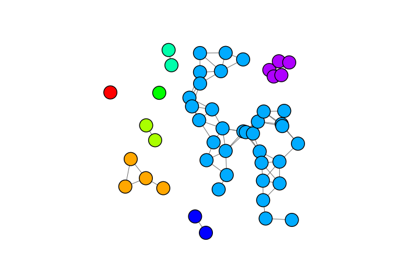
Connected Components
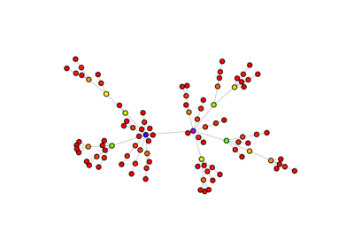
Configuration Instance
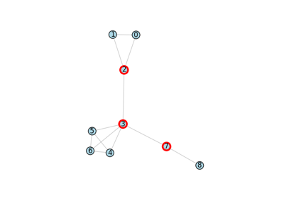
Articulation Points
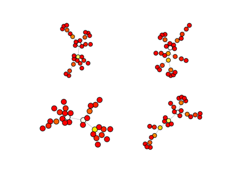
Visual styling
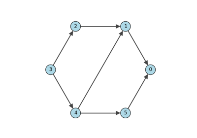
Maximum Flow
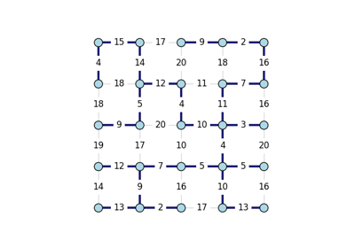
Minimum Spanning Trees
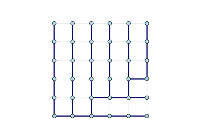
Spanning Trees
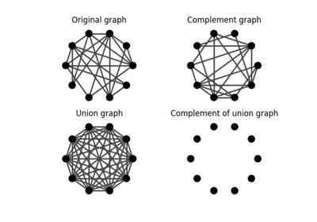
Complement
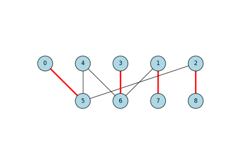
Maximum Bipartite Matching
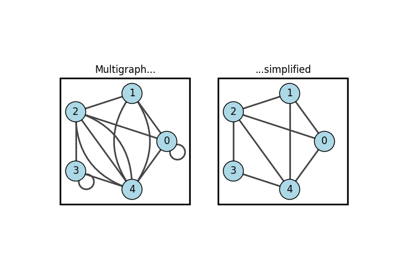
Simplify
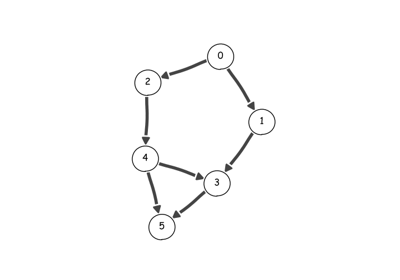
Topological sorting

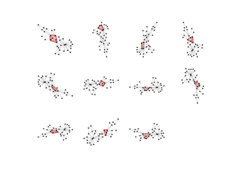
Cliques
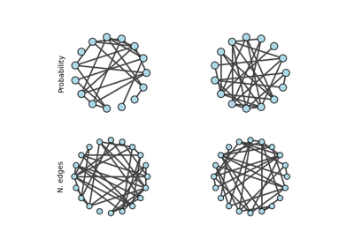
Erdős-Rényi Graph
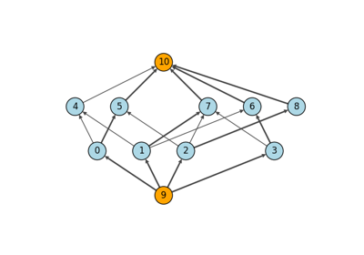
Maximum Bipartite Matching by Maximum Flow
Maximum Bipartite Matching by Maximum Flow
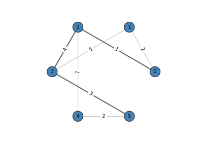
Shortest Paths

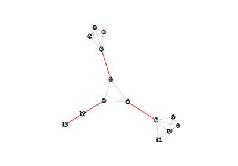
Bridges
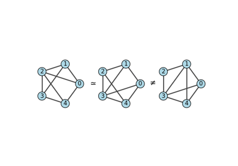
Isomorphism
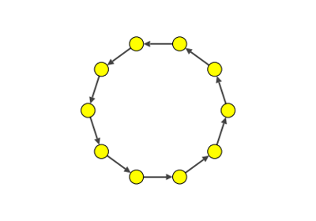
Ring Graph Animation
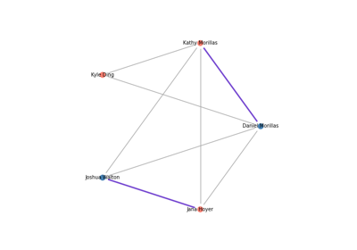
Quick Start


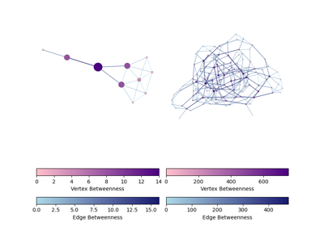
Betweenness